Métricas de avaliação
Dados de campos
Realização das atividades de campo
Com o objetivo de avaliar os desmatamentos detectados pelos sistemas PRODES-Cerrado e DETER-Cerrado foram realizadas quatro atividades de campo, priorizando visitas às regiões com maior quantidade de detecções. A elaboração dos trajetos também contemplou a ocorrência de desmatamentos em diferentes fitofisionomias, tipos de solo, clima, relevo, arranjos socioeconômicos e produtivos. Buscou-se também por uma logistica que contemplasse a otimização tempo e com o pernoite em cidades com infraestrutura adequada para a situação (hotéis, restaurantes e sinal de internet). Destaca-se também que, apesar do fator limitante relativo a distribuição de rodovias, buscou-se pelo equilibrio do percurso em estradas "principais" (rodovias estaduais e federais) e vicinais (estradas municipais e acessos a fazendas).
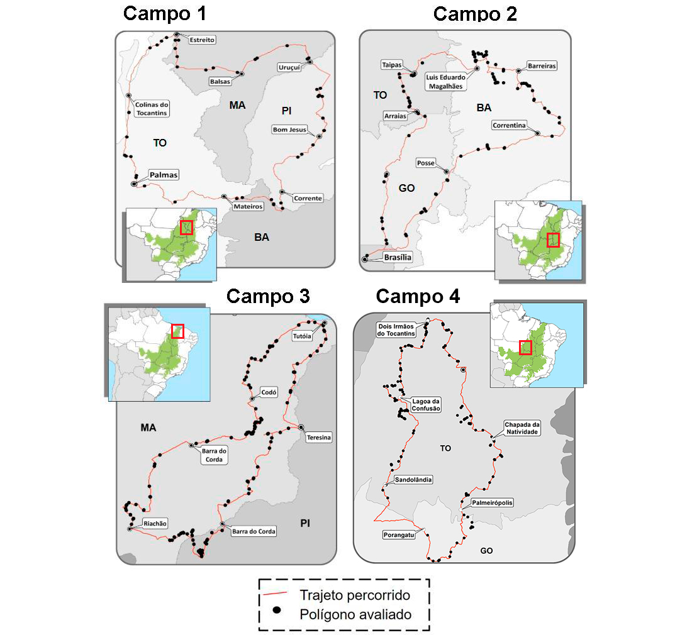
A definição do trecho a ser percorrido em cada dia se baseou em uma distância média percorrida de ~400 km durante um período de 10 horas (8h às 18h). A quantidade de áreas visitadas levou em consideração o tempo médio gasto em cada parada, sendo ~10 minutos em áreas sem sobrevôo de drone e ~20min em áreas com sobrevôo de drone.
A escolha das áreas com sobrevôo de drone se baseou na análise de mapas e imagens de satélite. Foi escolhido um número mínimo de 4 sobrevôos de drone em cada trecho. Essa seleção considerou critérios como: dificuldade de detecção (áreas campestres, áreas com elevada quantidade de pastos em estágio de degradação agronômica, áreas com queimadas recorrentes e áreas com alta resposta espectral aos efeitos da sazonalidade climática), tamanhos (áreas muitos grandes) e restrições de acesso (considerando a autonomia e o raio de sobrevôo do drone). Para essas áreas, de acordo com as orientações da Agência Nacional de Aviação Civil (ANAC), foram realizadas requisições de autorização de sobrevôo junto ao DECEA por meio do SARPAS.
Após a definição de cada trecho, foram preparados mapas georreferenciados em formato GeoPDF para posterior inserção no aplicativo de celular Avenza Maps. Estes mapas contemplavam os seguintes dados:
- Imagem de satélite (Sentinel 2 com composição R4 G3 B2).
- Trajeto previamente definido, com eventuais acessos às áreas desmatadas.
- Áreas detectadas pelo PRODES-Cerrado (a partir de 2016).
- Áreas detectadas pelo DETER-Cerrado (a partir de 2017).
- Localização das cidades de pernoite.
- Áreas previamente selecionadas para paradas sem sobrevôo de drone.
- Áreas previamente selecionadas para paradas com sobrevôo de drone.

Devido a restrição para importações de arquivos com até 500 mb, cada trecho foi subdividido em subtrechos. Destaca-se também que a importação de mapas no formato GeoPDF dispensou a necessidade de conexão de internet para a coleta dos dados.

Para cada mapa importado pelo aplicativo Avenza Maps foi criado um formulário com os seguintes campos:
- Classe (PRODES 16, 17, 18 ou DETER 18 ou 19)
- Cobertura (uso/cobertura observado no campo)
- Observação (observação adicional sobre a área visitada)
- ID do sobrevôo (caso ocorresse o sobrevôo no poligono visitado)
Durante a realização de cada campo, a pessoa responsável pela coleta registrava um marcador sobre a área desmatada. Essa marcação podia ser feita sem a necessidade de estar exatamente no local, o que favoreceu o registro de pontos com sobrevôo de drone (um exemplo dessa situação é ilustrado com a letra "B" na figura abaixo).

No final de cada dia as fotos e os registros dos questionários eram exportados, respectivamente, nos formatos .jpg e .csv. A planilha exportada continha as seguintes colunas:
- ID
- Campo
- Trecho
- Localizador
- Sobrevôo
- Data
- Latitude
- Longitude
- Classe
- Observação
- Cobertura
O nome das imagens correspondente a cada área visitada era formado pelo prefixo "Placemark/Localizador" e o respectivo ID. Caso houvesse mais de uma foto, esse id era acrescido de um sufixo indicando o sub-id de cada foto.
Processo de atualização
Após a execução das viagens de campo, deve-se organizar as mídias digitais obtidas em três pastas principais: fotos_camera, fotos_drone e videos_drone. Internamente deverá conter subpastas com identificadores de qual visita de campo está sendo documentada. Por exemplo, a subpasta Campo_01 é referente as mídias obtidas durante a primeira validação de campo. Dentro da pasta de Campo, deve-se criar subpastas com o identificador do Trecho onde foi retirada a fotografia ou vídeo de drone. E por fim, dentro da pasta referente ao Trecho, deve-se criar subpastas com o Localizador único de cada mídia.
Portanto, a imagem abaixo apresenta estrutura de pastas e arquivos referente as fotos retiradas do solo durante a visita ao primeiro campo, ao atravessar o trecho anotado como '1A' e localizador único definido como Placemark 'numero'.

Após organização dos arquivos em pastas, uma planilha para controle e organização das imagens. Um exemplo de arquivo .csv que realiza a organização para o Campo_01, trecho '1A' pode ser encontrado neste link. Conforme, pode ser observado no exemplo, é importante que o arquivo csv apresente o seguinte cabeçalho:
id,Campo,Trecho,Localizado,Sobrevôo,Data,Latitude,Longitude,Classe,Obs,Cobertura
Uma vez que o arquivo .csv esteja preenchido com a informação de todos os campos. Deve-se realizar a inserção do mesmo no banco de dados, o que pode ser alcançado pela execução do seguinte comando:
psql -d <db_name> --user=<db_user> -c "COPY pontos_campo FROM '<caminho_para_o_arquivo_csv>.csv' delimiter ',' CSV [HEADER];"
Após importação no banco de dados, é necessária a criação da geometria de ponto na tabela pontos_campo.
UPDATE pontos_campo
SET geom = ST_SetSRID(ST_MakePoint(lon, lat), 4674)
WHERE geom is null;
Em seguida é necessário realizar o cruzamento entre o PRODES e DETER-Cerrado em relação aos pontos visitados para associar o ponto visitado em campo com um polígono de desmatamento.
UPDATE pontos_campo
SET prodes_id = p.gid
FROM prodes_cerrado p
WHERE pontos_campo.prodes_id IS NULL
AND ST_INTERSECTS(pontos_campo.geom, p.geom)
UPDATE pontos_campo
SET deter_id = d.gid
FROM deter_cerrado d
WHERE pontos_campo.deter_id IS NULL
AND ST_INTERSECTS(pontos_campo.geom, d.geom)
Geralmente as mídias digitais recolhidas durante a validação de campo (principalmente as obtidas durante o sobrevôo de drone) são compostas por arquivos pesados. Para tal, aplica-se um script para compresão dos mesmos a fim de facilitar a sua disponibilização no Cerrado DPAT. O script a ser executado é o compress_videos.sh, porém antes de executar é necessário alterar as linhas 5 e 6 com o caminho até o diretório dos vídeos e fotos de drone respectivamente.
./compress_videos.sh
A versão atual do script compress_videos.sh não comporta a compresão de imagens de câmera, porém caso desejem comprimir também estas, basta descomentar as linhas 7 e 42-47.
Em seguida, a fim de realizar uma organização nas fotos comprimidas em um diretório único chamado dados_padronizados, adequando corretamente os nomes dos arquivos de acordo com o padrão descrito no arquivo .csv, deve-se executar o script organize_fotos.js. Antes de executar, confira as linhas 38 em relação a localização do arquivo .csv e caso tenha-se comprimido as fotografias de câmera, verificar também as linhas 52 e 53.
node organize_fotos.js
Por fim, deve-se configurar o caminho para a pasta dados_padronizados no arquivo de configuração .env no Application Server utilizando diretive FIELD_DATA_DIR. Por exemplo:
FIELD_DATA_DIR=/media/campo/dados_padronizados
Dados de validação amostral
O processo de validação do PRODES-Cerrado se baseou em uma amostragem aleatória estratificada a partir de estratos definidos dentro e fora das áreas mapeadas pelo PRODES-Cerrado (antrópico 2000 e incrementos 2002-2019), considerando um intervalo de confiança de 95%, erro padrão de 3% e uma variância de 50%. O detalhamento do desenho amostral é relatado no artigo "Quality assessment of the PRODES Cerrado deforestation data".

O tamanho amostral para cada estrato (assim como a respectiva população em pixels) é mostrado na figura abaixo.
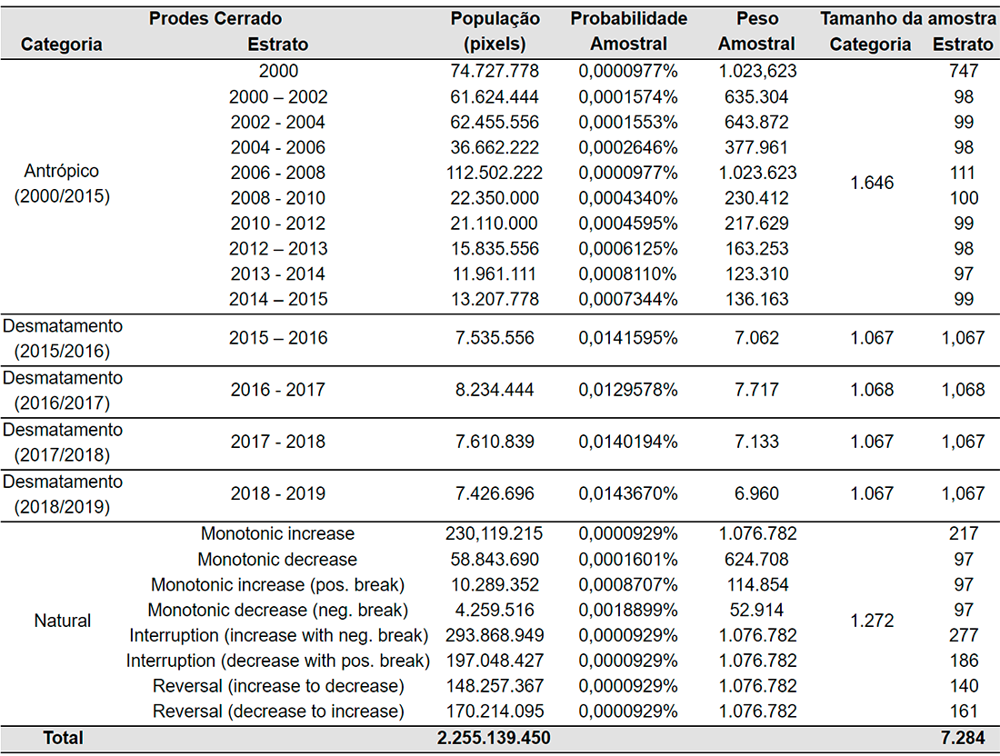
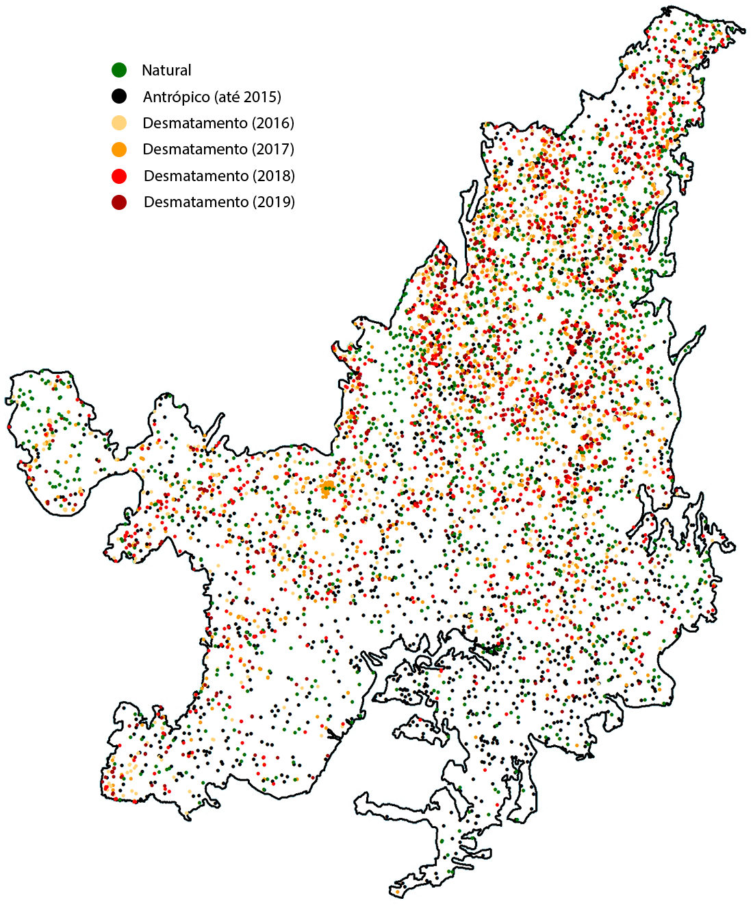
Sorteio de novos pontos
Para a validação amostral de um novo ano, um novo sorteio de pontos deve ser realizado dentro dos novos incrementos de desmatamento e da área que ainda não foi mapeada pelo PRODES-Cerrado (i.e., vegetação nativa). Esse novo sorteio, baseado no tamanho amostral definido para cada estrato, pode ser realizado por meio do software QGIS de acordo com as seguintes etapas:
- Sorteio dos pontos dentro dos novos incrementos de desmatamento.
- Execução da ferramenta "dissolve" (opção presente na maior parte dos softwares e bibliotecas SIG).
- Sorteio dos pontos por meio da ferramenta "Pontos aleatórios no interior de poligonos".
- Sorteio dos pontos dentro dos estratos fora da máscara antrópica (8 "flags" criadas pelo BFastClassify)
- Conversão raster --> vetor (o download do raster utilizado na validação amostral do PRODES-Cerrado 2019 está disponibilizado para download)
- Execução da ferramenta "dissolve" (opção presente na maior parte dos softwares e bibliotecas SIG)
- Sorteio dos pontos por meio da ferramenta "Pontos aleatórios no interior de poligonos".
- Execução da ferramenta "Mesclar camadas vetoriais" para juntar os pontos dentro dos estratos antrópicas e naturais.
Inspeção no TVI
Em função da extensão da área e do período a ser avaliado, o processo de aquisição de dados pontuais referentes ao uso e cobertura da terra por meio de inspeção visual em imagens de sensoriamento remoto despende tempo e resulta em um grande volume de dados a serem armazenados. Tendo em vista esta situação, o Laboratório de Processamento de Imagens e Geoprocessamento da Universidade Federal de Goiás (LAPIG - UFG) desenvolveu uma ferramenta online e de código aberto com o propósito de otimizar a inspeção de pontos em imagens de satélite.
A ferramenta TVI (Temporal Visual Inspection) utiliza uma arquitetura web, baseada em softwares livres, com banco de dados MongoDB e servidor de aplicação NodeJs. O banco de dados é responsável por armazenar todas as informações referente aos pontos (ex: classes atribuídas por um intérpretes, coordenadas geográficas, etc), sendo que sua alimentação ocorre por meio de um módulo de importação que recebe como entrada um arquivo GeoJSON com as coordenadas dos pontos a serem interpretados. Após este processo, a ferramenta busca as imagens que serão inspecionadas.
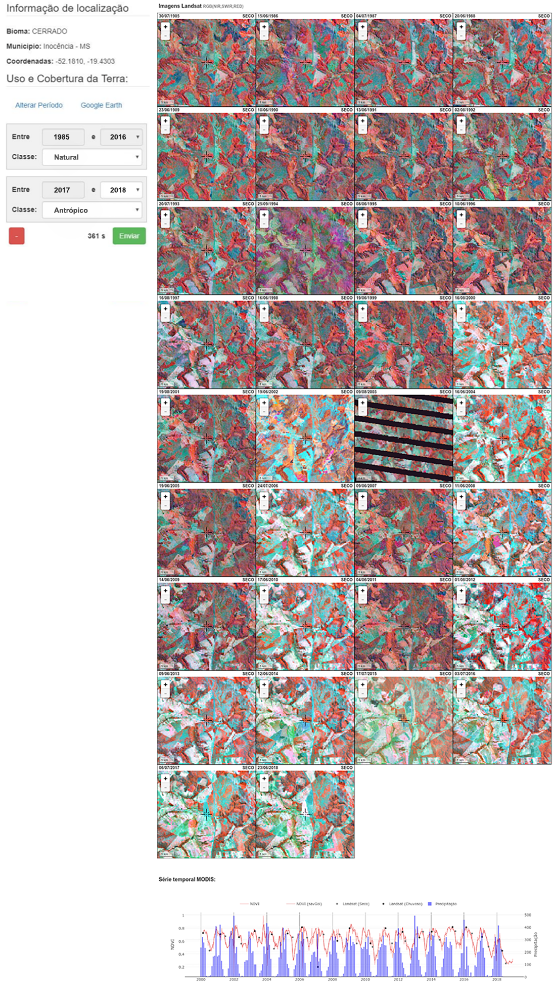
As imagens são disponibilizadas junto com dados auxiliares. Ao intérprete são fornecidos gráficos de séries temporais de imagens MODIS NDVI (normalized difference vegetation index) e precipitação (TRMM, Tropical Rainfal Measurement Mission, e GPM, Global Precipitation Mission), além do acesso às imagens disponibilizadas pelo software Google Earth por meio de um arquivo KML correspondente ao ponto inspecionado. Assim, cabe ao usuário interpretar e associar à determinado ponto as respectivas de cobertura do solo (antrópico, natural e não observado) observadas em cada ano da série histórica. Essa associação, realizada com base nos critérios adotados pelo INPE, é realizada por meio da seleção do intervalo em que a classe pode ser observada na imagem.
Cada um dos pontos sorteados foi inspecionado por 2 interpretes. Para um determinado ano, caso houvesse discordância entre eles, um terceiro interprete (mais experiente e com maior conhecimento acerca do bioma) foi encarregado de definir uma classe editada com a cobertura por ele observada. A classe final, com o voto majoritário ou editado de todos os pontos, recebeu o nome de "classe consolidada".
Destaca-se também que, além dos critérios adotados pelo INPE, a realização das atividades de campo reuniu um rico material que subsidiou reuniões e treinamentos com o propósito de esclarecer comportamentos e caracteristicas presentes no bioma e respectiva representação em imagens Landsat. Algumas situações discutidas durante estes momentos foram dúvidas a respeito do padrão espectral de áreas queimadas e de áreas desmatadas que após determinado tempo começam a ter a vegetação nativa em processo inicial de regeneração. Um exemplo dessa última situação é mostrado na figura abaixo. Nesse caso, o desmatamento foi detectado no ano de 2017, seguido de regeneração e uma nova limpeza da área em 2019 (momento da visita em campo).

Abaixo é mostrado um outro exemplo que também reflete as dificuldades relatadas e discutidas em cada reunião. Nele, o ano com a detecção do desmatamento correspondeu a identificação do corte raso em 2016, e não à ocorrência de queimada no ano anterior (áreas com eventos de degradação também não foram considerados).
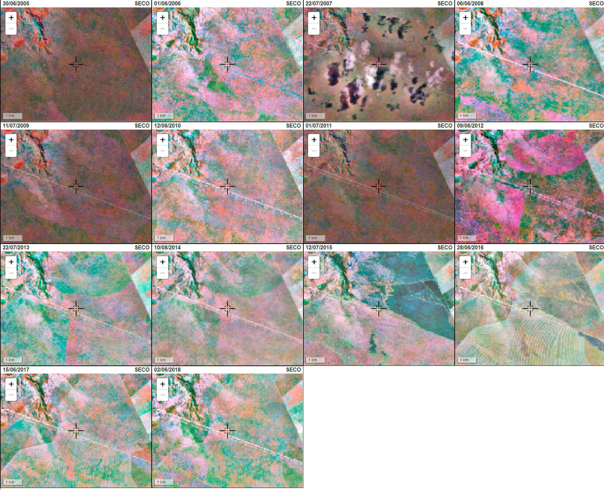
Dentro do TVI também foi desenvolvida uma interface voltada ao acompanhamento do processo de inspeção. Assim, um usuário com status de supervisor tem a possibilidade de monitorar o desempenho de cada um dos intérpretes, de forma a identificar eventuais inconsistências e a necessidade de adequações aos critérios estabelecido. Nesta interface o supervisor tem acesso a todas as inspeções efetuadas, havendo a possibilidade de filtragem por classes e intérpretes. Também são disponibilizados algumas informações com o objetivo de contribuir com possíveis orientações e discussões com a equipe envolvida. São elas: números de pontos inspecionados (por intérprete), média de tempo por ponto inspecionado ( intérprete), média de “votos” (inspeções) por cobertura (em porcentagem) e número de pontos com concordância. Ressalta-se a importância de tal interface durante os treinamentos e reuniões, onde os interpretes puderam ser acompanhados e orientados por especialistas nos biomas acerca das suas respectivas dificuldades.
Após o processo de inspeção visual, uma planilha com os registros consolidados e de cada interprete é gerada pelo TVI. Por fim, uma tabela final é disponibilizada com as classes consolidadas e com o ano da transição "Antropico" para "Natural". Considerando que a classe antrópica não é revertida para natural, o ano de detecção pode ser definido de diferentes formas (e.g., scripts, filtros em planilhas).
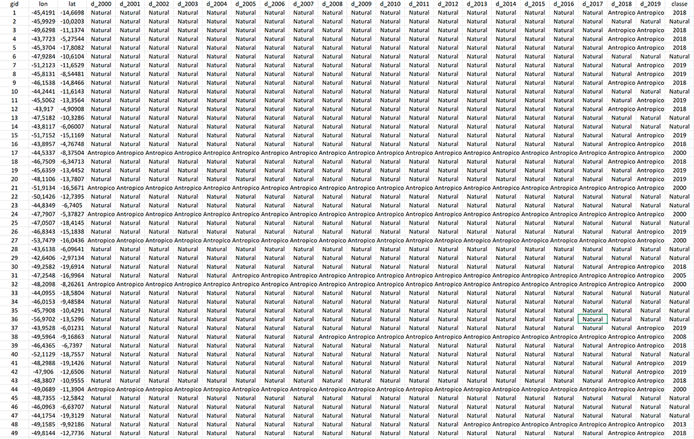
Processo de atualização
Após o processo de Inspeção no TVI, um arquivo .csv com a consolidação das classes pontos é criado com a seguinte estrutura de cabeçalho e considerando ';' como separador:
gid;lon;lat;d_2000;d_2001;d_2002;d_2003;d_2004;d_2005;d_2006;d_2007;d_2008;d_2009;d_2010;d_2011;d_2012;d_2013;d_2014;d_2015;d_2016;d_2017;d_2018;d_2019;classe
Os campos lon e lat deverão apresentar a longitude e latitude do ponto inspecionado. As colunas 'd_20**' deverão apresentar a classe atribuída ao ponto no respectivo ano e o campo 'classe' deverá apresentar a classe final consolidada após a inspeção, podendo ser ela Natural, Água ou o ano apontado como desmatamento pela inspeção visual.
Após revisão do arquivo .csv, deve-se inserir os resultados alcançados pela validação amostral através do script insert_validacao_amostral.js. Antes de executar o script, deve-se alterar a linha 9 para a localização do arquivo .csv. Para execução da inserção, faça:
node insert_validacao_amostral.js
Após inserção dos pontos no banco de dados, é necessária a criação das geometrias dos pontos, portanto execute o seguinte comando SQL:
UPDATE validacao_amostral
SET geom = ST_Transform(ST_SetSRID(ST_MakePoint(cast(lon as float), cast(lat as float)), 4674),4674)
WHERE geom is null;
Em seguida, deve-se realizar a intersecção dos pontos inseridos com os polígonos de desmatamento PRODES-Cerrado. Para tal, execute o seguinte comando SQL:
UPDATE validacao_amostral
SET prodes_id = p.gid
FROM prodes_cerrado p
WHERE validacao_amostral.prodes_id IS NULL
AND ST_INTERSECTS(validacao_amostral.geom, p.geom)
Por fim, deve-se executar duas queries para anotar quais pontos foram consolidados como desmatamento ou não através da atribuição de valor ao campo aux_desmat, caso seja detectado desmatamento atribui-se 1, caso contrário 0 :
UPDATE validacao_amostral
SET aux_desmat = 1
WHERE aux_desmat is null AND classe != 'AGUA' AND classe != 'NATURAL' AND classe != 'NAO_OBSERVADO'
Após a atribuição do valor 1 aos polígonos que foram detectados em áreas desmatadas, sobraram apenas pontos que foram anotados com a classe 'AGUA', 'NATURAL' ou 'NAO_OBSERVADO' de modo que estes pontos estão com valor null para o campo aux_desmat, portanto:
UPDATE validacao_amostral
SET aux_desmat = 0
WHERE aux_desmat is null
Cálculo de acurácia
As acurácias do produtor, do usuário e geral, foi calculada a partir da multiplicação de cada acerto (1) pela probabilidade amostral correspondente a cada estrato.
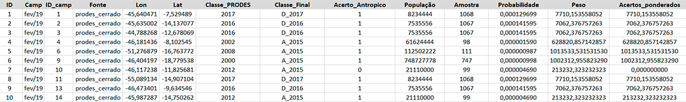
Para a construção da matriz de confusão foram consideradas as classes "Antrópico" e "Natural" no ano de 2019. O resultado pode ser observado na tabela abaixo.
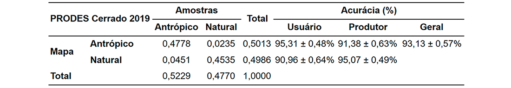
Considerando os outros anos mapeados, observa-se uma proximidade entre as estimativas da acurácia.
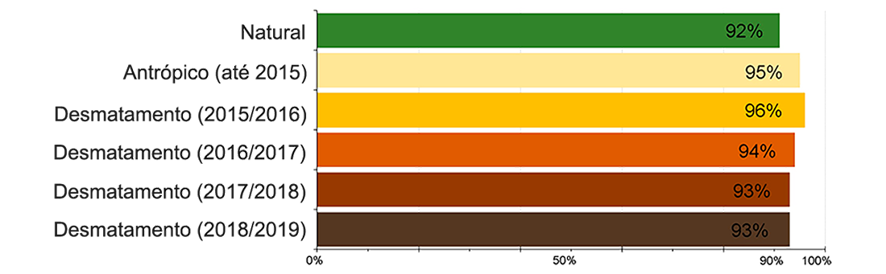
O arquivo com todas as amostras utilizadas no cálculo da acurácia de 2019 está disponível para download. Ressalta-se que essas amostras devem ser consideradas no processo de validação para os próximos anos, com a substituição dos pontos presentes na classe "Natural".
Análise automática
Execução do BFast-Monitor
Para atualização do Bfast-Monitor, é necessário três coisas:
- Um Shapefile com os pixels MODIS filtrados para as áreas onde se deseja verificar se houve quebras na série temporal.
- Um arquivo .TIF com toda a série temporal MODIS que pode ser gerado pelo projeto MODIS Data Cube.
- Os scripts
bfast.Remaxmin.R, ambos inseridos na pasta scripts/bfast no repositório do Github.
Criação do Shapefile com os Pixels MODIS
Primeiramente, é importante informar que utilizamos a tabela pixel_modis no banco de dados que contém todos os pixels MODIS para a extensão do Cerrado, sendo assim necessária a filtragem para apenas os pixels MODIS que se encontram dentro das áreas desmatadas de interesse.
Este filtro pode ser alcançado através da construção de uma View no banco de dados com os polígonos PRODES-Cerrado de interesse. Para exemplificar, criamos uma View que filtram os polígonos PRODES-Cerrado detectados em 2019 com o comando SQL abaixo:
CREATE OR REPLACE VIEW public.prodes_2019 AS
SELECT prodes_cerrado.gid,
prodes_cerrado.uid,
prodes_cerrado.origin_gid,
prodes_cerrado.pathrow,
prodes_cerrado.view_date,
prodes_cerrado.source,
prodes_cerrado.classname,
prodes_cerrado.areamunkm,
prodes_cerrado.county,
prodes_cerrado.uf,
prodes_cerrado.geom,
prodes_cerrado.sucept_desmat,
prodes_cerrado.sucept_desmat_peq,
prodes_cerrado.sucept_desmat_grd,
prodes_cerrado.bfm_pct,
prodes_cerrado.year,
prodes_cerrado.lat,
prodes_cerrado.long,
prodes_cerrado.classefip,
prodes_cerrado.cd_geocmu
FROM prodes_cerrado
WHERE prodes_cerrado.year = 2019;
Após a criação da View prodes_2019, é necessária a criação de um Shapefile com os pixels MODIS que intersectam os polígonos de desmatamento, contendo os seguintes atributos: {lon, lat, seq_id}, que representam a longitude e latitude do pixel e um identificador único do polígono onde foi extraído o ponto. O Shapefile é criado pelo comando shell abaixo:
$ pgsql2shp -f <filename.shp> -h <hostname> -u <db_user> -P <db_password> <db_name> "select ST_X(pixel.geom) as lon, ST_Y(pixel.geom) as lat, p.gid as seq_id, pixel.geom as geom from pixel_modis pixel inner join prodes_2019 p on ST_INTERSECTS(p.geom, pixel.geom)"
O comando acima deverá criar um arquivo filename.shp com os pixels MODIS para os desmatamentos PRODES-Cerrado 2019 no local onde foi executado.
Execução do MDC e criação da série MODIS
Inicialmente é necessário realizar o download do projeto MDC. Em seguida, deve-se instalar todas as dependências listadas no projeto. Em seguida, extraia o arquivo MRT.zip e altere o parâmetro path_mrt no arquivo mdc/src/conf/datasources.conf para a localização da pasta extraída.
Para iniciar o processamento da série temporal, execute os passos definidos no Readme.md do projeto MDC, e por fim, execute o comando abaixo que deverá criar toda a série temporal para o Brasil do período de 01 de Janeiro de 2000 até 01 de Janeiro de 2020. Portanto, para datas futuras, deve-se alterar os parâmetros -s e -e.
$ python sits.py -d modis -p MOD13Q1.006 -r brasil -s 2000-01-01 -e 2020-01-01
O processamento acima irá criar diversos arquivos .TIF na pasta. Em seguida é necessário organizar todos os arquivos .tif em uma pasta única. Fora da pasta dos arquivos, deve-se criar um arquivo .txt listando todos os arquivos .tif gerados, portanto pode-se executar os seguintes comandos no bash:
$ touch mod13q1_ndvi_list.txt
$ ls <pasta_com_arquivos_tif>/ > mod13q1_ndvi_list.txt
Em seguida, acesse a pasta com os TIFs. Inicialmente é necessário descobrir qual o valor do parâmetro NoData para os arquivos gerados. Para tal execute o seguinte comando:
$ gdalinfo nomedoarquivo.tif
Após verificar o valor do NoData, execute o comando abaixo para geração do arquivo VRT da série temporal:
$ gdalbuildvrt -srcnodata <NoData_value> -separate -input_file_list ../mod13q1_ndvi_list.txt ../<nome_arquivo_VRT>.vrt
Por fim, exeute o comando abaixo para criação de um arquivo único TIF, também conhecido como BigTIF. Vale ressaltar que o comando abaixo possui um tempo considerável de processamento, portanto é aconselhável executá-lo em segundo plano com a ajuda do nohup.
$ nohup gdal_translate -co TILED=YES -co COMPRESS=lzw -co BIGTIFF=YES -co INTERLEAVE=PIXEL ../<nome_arquivo_VRT>.vrt ../<nome_arquivo_TIF>.tif > saida.out &
Para inserir a série temporal gerada no Cerrado DPAT, é necessário mover os arquivos <nome_arquivo_TIF>.tif e <nome_arquivo_VRT>.vrt para dentro da pasta catalog/time_series_db na localização da pasta catalog configurada no OWS Server. Em seguida, altere a propriedade file na chave [MOD13Q1_NDVI] no arquivo de configuração layers.ini (que disponibiliza a série temporal via serviço no Cerrado DPAT) para <nome_arquivo_TIF>.tif.
Vale ressaltar que a série temporal MODIS criada de Janeiro de 2000 até Agosto de 2020 está atualizada no arquivo DADOS_RASTER_CATALOG_FIP_CERRADO.tar.gz com nome pa_br_mod13q1_ndvi_250_2000_2020.tif dentro da subpasta time_series_db.
Execução dos scripts de atualização do Bfast
Após a criação da série MODIS para o Brasil, é necessária a execução do algoritmo Bfast-Monitor para os pixels filtrados. Primeiramente é necessário alterar o arquivo bfast.R na linha 38 (descrita abaixo), indicando corretamente a localização do arquivo BigTIF com a série MODIS processada.
ndvi <- brick("<localização_arquivo_serie_MODIS.tif>")
Em seguida, deve-se executar o script bfast.R (que importa o script maxmin.R para normalização dos dados), informando os parâmetros com a localização do Shapefile criado e quantos pixels MODIS serão analisados, conforme o exemplo abaixo, que indica a localização do shapefile modis_prodes_2019_shp e que deverão ser analisados dos pixels 1 até o 123513 (quantidade total de pixels no Shapefile):
Rscript bfast.R <path_to_modis_prodes_2019.shp> 1 123513
Este processamento irá resultar em um arquivo .csv nomeado result.csv. Por fim, basta importar o arquivo .csv no banco de dados utilizando o script insert_bfast_db.js. Primeiramente é necessário alterar a linha 9 do script com a localização correta do arquivo result.csv. Por fim, execute o script com o comando.
node insert_bfast_db.js
Em seguida, deve-se criar a geometria dos pontos importados no banco de dados:
UPDATE bfast_points
SET geom = ST_SetSRID(ST_MakePoint(lon, lat), 4674)
WHERE geom is null;
Por fim, é necessária a atualização do campo bfm_pct na tabela PRODES-Cerrado que deverá conter a porcentagem de quebras identificadas em cada polígono filtrado, portanto deve-se executar a seguinte query:
update prodes_2019
set bfm_pct = g.div
from
(
select tt.gid_total,tt.totale,pp.gid_na,pp.total_na, ((cast(pp.total_na as numeric)/ cast(tt.totale as numeric)) * 100) as div from
(
SELECT p.gid as gid_total, count(b.geom) AS totale
FROM prodes_2019 p
LEFT JOIN bfast_points b ON ST_INTERSECTS(p.geom,b.geom)
GROUP BY p.gid
) as tt
INNER JOIN
(
SELECT p.gid as gid_na, count(b.geom) AS total_na
FROM prodes_2019 p
LEFT JOIN bfast_points b ON ST_INTERSECTS(p.geom,b.geom)
where b.breakpoint <> 'NA'
GROUP BY p.gid
) as pp
on pp.gid_na = tt.gid_total
) as g
where g.gid_total = prodes_2019.gid
Susceptibilidade ao desmatamento
Construção das superfícies
As superfícies de susceptibilidades foram construídas a partir da sintese dos principais fatores vinculados a estes fenômenos. Uma compilação de métricas espacialmente explícitas relacionadas a esses fatores, foi realizada a partir de um processo de revisão da literatura, disponibilidade de dados e verificação, por meio estatístico, da significância e das correlações entre dados compilados. O conjunto final foi constituído por 11 métricas: distância de áreas antrópicas; distância de rodovias; distância de silos e armazéns; categoria fundiária; tamanho da propriedade; textura e tipo de solo; geomorfologia, declividade, altitude e média anual da precipitação acumulada entre os anos de 200 e-2015.
| Dado | Fonte |
|---|---|
| Distância de áreas antrópicas | Calculada a partir da área antrópica acumulada do PRODES-Cerrado |
| Distância de rodovias | Open Street Maps |
| Densidade de silos e armazens | CONAB (revisado pelo LAPIG-UFG) |
| Altitude | SRTM |
| Delividade | SRTM |
| Precipitação | TRMM/INMET (interpolação realizada pelo LAPIG-UFG) |
| Tamanho da propriedade | SICAR |
| Categoria fundiária | Propriedades (SICAR) Unidades de Conservação (MMA) Terras Indigenas (Funai) Assentamentos (INCRA) Comunidades Quilombolas (INCRA) |
| Geomorfologia | BDIA-IBGE |
| Solo (tipologia) | BDiA-IBGE |
| Solo (textura) | BDiA-IBGE |
O método de Pesos de Evidência, adaptado para análises espaciais pelo software Dinamica EGO, foi utilizado para verificar a influência de cada métrica nos desmatamentos grandes e pequenos ocorridos entre os anos de 2010 e 2015. Este intervalo foi escolhido para que as duas superfícies geradas fossem aos desmatamentos detectados após 2016 (início do projeto FIP Monitoramento). A interação entre os pesos de cada métrica resultou em dois arquivos raster com valores numérico entre 0 e 1, indicando, respectivamente, áreas com baixa e alta susceptibilidade ao desmatamento. Os arquivos de entrada do modelo (métricas e paisagens) estão disponibilizados aqui.
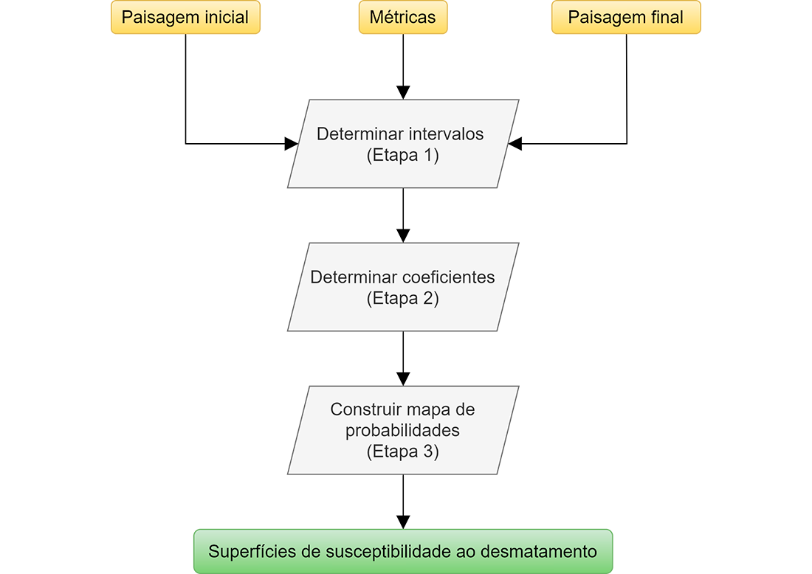
Os procedimentos que ocorreram dentro do software Dinamica EGO estão detalhados nas figuras abaixo.
Etapa 1: Categorização das métricas continuas (download do modelo em formato .egoml)

Etapa 2: Cálculo dos coeficientes (pesos) de cada métrica (download do modelo em formato .egoml)
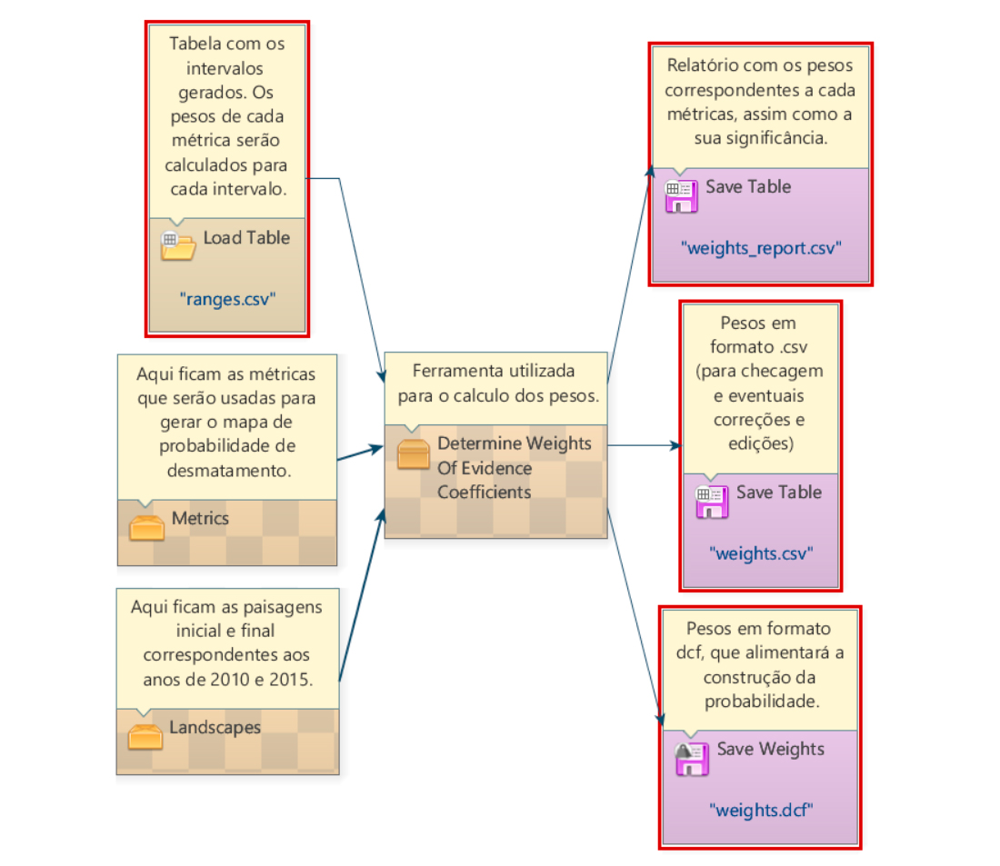
Etapa 3: Cálculo da susceptibilidade ao desmatamento (download do modelo em formato .egoml)

Ao final, as superfícies geradas foram avaliadas a partir dos seus respectivos cruzamentos com os polígonos detectados no ano de 2016.

Após a execução do modelo para todo o Cerrado, foi realizado o cruzamento das superfícies geradas com os polígonos do PRODES e DETER-Cerrado para os anos de 2016, 2017 e 2018. Para os polígonos do PRODES-Cerrado, foi observado que cerca de 51% dos polígonos estão em áreas com alta susceptibilidade a desmatamentos grandes o que representa uma área total de 3.496 km², de modo que 75% dessa área apresenta susceptibilidade superior a 50%. O mesmo ocorre também para os polígonos de desmatamento pequenos, que representam uma área total de 4.902 km² e 78% da área desses polígonos está inserida regiões com alta susceptibilidade a desmatamentos pequenos.
Da mesma forma, para os polígonos do DETER-Cerrado foi observado que apenas 14% dos polígonos estão em regiões com alta susceptibilidade a desmatamentos grandes, porém estes 14%, compõem um total de 2.855 km² e representam aproximadamente 54% de toda a área desmatada no período supracitado, o que atrai uma atenção especial para este caso, pois embora a quantidade de desmatamentos seja menor, o seu impacto é significativo para o contexto. Para os polígonos de desmatamento pequenos, que representam 87% do total de polígonos e correspondente a 2.437 km², 71% destes polígonos se encontram em regiões com pelo menos 50% de susceptibilidade a desmatamentos pequenos, o que mostra uma boa acurácia do método em proporcionar um indicativo para desmatamentos futuros, fornecendo assim um guia viável para órgãos governamentais intensificarem a fiscalização em regiões com alta susceptibilidade de desmatamentos.
Cruzamento com suceptibilidade
Após atualização dos dados PRODES-Cerrado e/ou DETER-Cerrado, é necessária a atualização das colunas sucept_desmat_peq e sucept_desmat_grd que representam a susceptibilidade a desmatamentos grandes e pequenos dos polígonos PRODES-Cerrado. Para tal, é necessário obter os arquivos .TIF com as superfícies geradadas no link. O arquivo DADOS_RASTER_CATALOG_FIP_CERRADO.tar.gz possui todos dados Raster presentes no DPAT, para tal descompacte a pasta FIP para obter ambas as superfícies.
Primeiramente, deve-se instalar as dependências do python e as bibliotecas para execução do script run_zonal_susceptibilidade.py. Portanto, execute o script install_dependences.sh:
./install_dependences.sh
Em seguida, acesse o arquivo run_zonal_susceptibilidade.py presente no repositório do projeto e faça as seguintes modificações:
- Altere a linha 118 colocando as valores corretos para autenticação no banco de dados:
python connPostgis = "PG: host=%s port=%s dbname=%s user=%s password=%s" \ % ('<db_host>', '5432', '<db_name>', '<db_user>', '<db_password>') - Em seguida, altere a linha 125 com o nome da tabela ou View do banco de dados que apresenta o conjunto de dados a ser alterado. No exemplo abaixo, os polígonos PRODES-Cerrado 2019 são atualizados com a média dos valores em cada polígono:
table_name = 'prodes_2019'
- Por fim, altere as linhas 128 e 129 com a localização dos arquivos .TIF da superfície de susceptibilidade a desmatamentos pequenos e grandes respectivamente.
Após as alterações, deve-se executar o script através do seguinte comando:
$ python run_zonal_suceptibilidade.py
Por fim, atualize a coluna sucept_desmat que deverá armazenar o valor da coluna com maior susceptibilidade para aquele polígono.
UPDATE prodes_2019 SET sucept_desmat = GREATEST(sucept_desmat_peq, sucept_desmat_grd)
WHERE sucept_desmat_peq IS NOT NULL OR sucept_desmat_grd IS NOT NULL;
Cálculo da métrica de qualificação
Após a atualização de todas as etapas que compoẽm a qualificação dos polígonos PRODES-Cerrado, é necessário realizar a atualização de sua qualificação no banco de dados. Para tal, assim como detalhado na seção (inserir link), considera-se os seguintes critérios para a qualificação dos polígonos PRODES-Cerrado.
| Classe | Critério | SQL query |
|---|---|---|
| A | São considerados polígonos classe 'A' aqueles cuja cobertura não foi classificada como 'Vegetação nativa' | UPDATE prodes_cerrado set classefip = 'A' FROM pontos_campo pt where pt.prodes_id=prodes_cerrado.gid and pt.cobertura != 'Vegetação nativa'; |
| B | São considerados polígonos classe 'B' aqueles cuja validação amostral apontou 'desmatamento' como classe predominante e os métodos de análise automática devolveram mais de 50% de confiabilidade da existência de desmatamento. | UPDATE prodes_cerrado set classefip = 'B' from (SELECT p.bfm_pct as bfast, p.classefip as cfip, p.sucept_desmat as psuct, p.year as ano, v.prodes_id as idProdes, mode() WITHIN GROUP (ORDER BY v.aux_Desmat) AS modal_value FROM validacao_amostral v INNER JOIN prodes_cerrado p on p.gid = prodes_id where p.year > 2015 and p.classefip is null group by 1,2,3,4,5) as sub WHERE sub.idProdes = prodes_cerrado.gid and sub.modal_value = 1 and (sub.bfast >= 50 and sub.psuct >= 0.5) and sub.cfip is null; |
| C | São coniderados polígonos classe 'C' aqueles que apenas os métodos automáticos poderam ser executados e algum dos métodos apresentou mais de 50% de confiabilidade para a existência do desmatamento. | UPDATE prodes_cerrado SET classefip = 'C' WHERE prodes_cerrado.year > 2015 and (prodes_cerrado.bfm_pct >= 50 OR prodes_cerrado.sucept_desmat >= 0.5) and prodes_cerrado.classefip is null; |
| D | São considerados polígonos classe 'D' aqueles que apenas os métodos automáticos poderam ser executados e obtiveram a confiabilidade abaixo de 50% para a existência do desmatamento. | UPDATE prodes_cerrado SET classefip = 'D' WHERE prodes_cerrado.year > 2015 and (prodes_cerrado.bfm_pct < 50 or prodes_cerrado.sucept_desmat < 0.5) and prodes_cerrado.classefip is null; |
| E | São considerados polígonos classe 'E' aqueles que foram visitados em campo porém foi apontada 'Vegetação Nativa' como principal cobertura do solo. | UPDATE prodes_cerrado set classefip = 'E' FROM pontos_campo pt where pt.prodes_id = prodes_cerrado.gid and pt.cobertura = 'Vegetação nativa'; |
É importante ressaltar que devido aos parâmetros de treinamento dos algoritmos de análise automática, só é possível qualificar polígonos detectados após o ano de 2015.